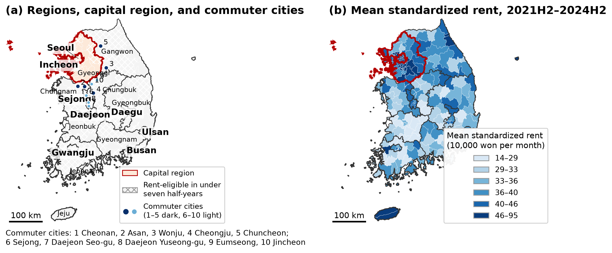
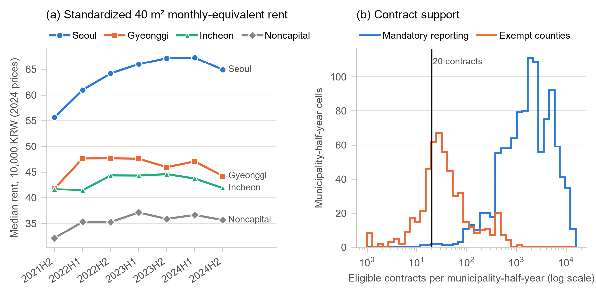
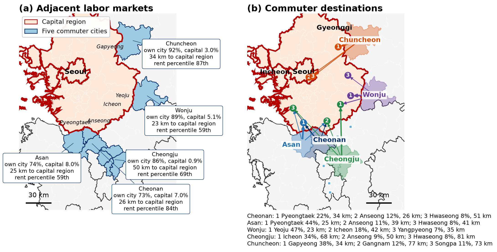
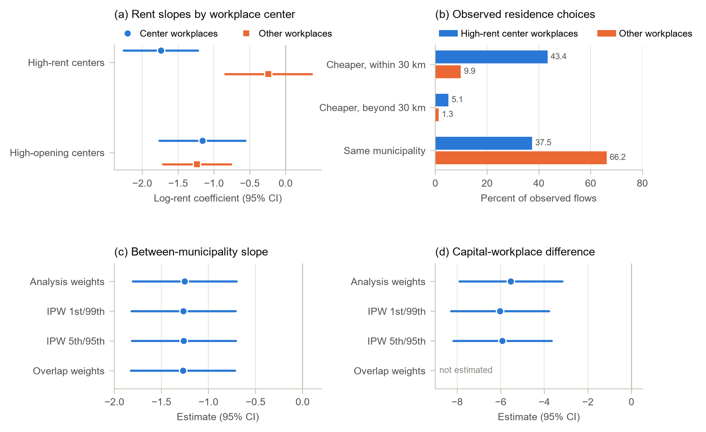

Cheaper but Farther
Where young Korean wage workers live given where they work, where the rent gradient in that choice comes from, and why it is a feature of the capital region rather than of the country
한국어판 — 비싼 직장, 먼 집
Worker data are the 2021H2–2024H2 rounds of the Regional Employment Survey of Statistics Korea, accessed through its Microdata Integrated Service; each respondent’s residence and workplace are recorded at the municipality (si-gun-gu) level. Rent is a standardized index built from 5,159,595 monthly-rent lease contracts reported to the Real Transaction Management System between 2017H1 and 2024H2.
Where do young wage workers live, given where they work?
Where a young worker lives is a joint outcome of housing costs, access to jobs, amenities and housing supply, and no single coefficient in a residential-choice model separates these forces. Rent is an equilibrium price that capitalizes access and amenities (Roback, 1982; Glaeser and Gottlieb, 2009), so a negative coefficient on the rent of a residence may reflect cost avoidance, sorting on unmeasured quality, or the location of jobs — and housing costs in expensive labour markets may themselves limit who gets to work there (Hsieh and Moretti, 2019; Ganong and Shoag, 2017). Korea makes the question sharp. The capital region — Seoul, Incheon and Gyeonggi — holds 57.8 percent of the workplaces of young wage workers, and its rent levels sit above the rest of the country in a stable order.
This study does not try to separate all of these forces. It asks a narrower question that the available data can answer: among employed wage workers aged 19–34 who hold a job in a given municipality, how is the standardized rent of a municipality related to whether they choose it as a residence, once the workplace, commuting distance and measured amenities are held fixed — and where in the country, and for whom, does that relation hold? Three answers follow. The conditional rent gradient is negative and stable across choice sets, survey rounds and inference methods. It arises from persistent differences in rent levels between municipalities, not from changes in a municipality’s own rent. And it is confined to capital-region residences, where workers at the most expensive workplace centres combine a steeper gradient with residence in cheaper, more distant municipalities.
Headline figures
| Item | Value |
|---|---|
| Estimation sample | 224,862 wage workers aged 19–34, seven half-years |
| Residence alternatives in each choice | 207–212 municipalities |
| Lease contracts behind the rent index | 5,159,595 |
| Log-rent coefficient, full choice set | −1.153 (0.263) |
| Change in relative odds of a residence with 10 percent higher rent | −10.4% |
| Within-municipality vs. between-municipality coefficient | 0.080 vs. −1.254 |
| Between slope, capital-region minus noncapital residences | −2.166; −1.903 without the five commuter cities |
| Rent slope at high-rent workplace centres vs. other workplaces | −1.739 vs. −0.238 |
| Workers at high-rent centres living in a municipality cheaper than the workplace | 48.5% vs. 11.2% elsewhere |
1. A residence choice with the workplace held fixed
The unit of analysis is the residence municipality chosen by a wage worker whose workplace municipality is observed. For each worker the alternatives are every municipality in the country whose lease records support a measured rent in that half-year — 207 to 212 of them — and the choice among them is modelled as a conditional logit (McFadden, 1974). A worker of type \(g\) (sex, education and age band) employed in municipality \(j\) in half-year \(t\) obtains from residence \(r\) the systematic utility
\[V_{grjt}=\lambda_{gtj}+\beta_H h_{rt}+\beta_D\log(1+d_{rj})+\beta_S\mathbf{1}\{r=j\}+\beta_P\mathbf{1}\{p(r)=p(j)\}+\boldsymbol{\gamma}'\mathbf{A}_{rt}+\rho_{p(r)},\]
where \(h_{rt}\) is log standardized rent, \(d_{rj}\) the centroid distance to the workplace, \(\mathbf{A}_{rt}\) four amenity indices, and \(\rho_{p(r)}\) a residence-province effect. The choice-group effect \(\lambda_{gtj}\) absorbs everything common to the residences available to that worker.
Conditioning on the workplace is what makes the coefficient a residential comparison. Expected wages, job openings and the industry mix of the workplace are common to all alternatives and drop out of the likelihood; what remains is a comparison of residences by rent, amenities and distance to a fixed job. The design is not a joint model of employment and workplace choice, and it does not treat the workplace as exogenous — workers may choose jobs and homes together. Nor does it observe moves: the survey is a sequence of repeated cross-sections, so what is described is where employed young workers live in each half-year, not how individuals relocate. And \(\beta_H\) is a conditional gradient, not a demand elasticity, because rent is an equilibrium price that also carries unobserved quality, productivity and supply.
Two features of the design matter later. The full choice set makes sampling of alternatives unnecessary; sampled choice sets with the McFadden (1978) correction serve only as a check. And because every group faces all rent-eligible residences, the 224,862 workers generate 4,498,851 choice-set rows in 21,379 groups — which, when residence attributes do not vary by worker type, collapse exactly to 335,839 rows in 1,596 half-year-by-workplace groups without changing the likelihood. Inference clusters two ways, by residence and by workplace geography (Cameron, Gelbach and Miller, 2011), and the main estimands also receive wild-score intervals from 999 Rademacher draws over residence blocks and over workplace blocks (Kline and Santos, 2012), because the number of geographic clusters is limited.
The geography the model has to explain is compact. In the estimation sample 51.8 percent of workers live and work in the same municipality and 85.2 percent in the same province; the mean centroid distance between residence and workplace is 8.6 km and its 90th percentile 24.5 km. Commuting across the capital-region boundary is rare in both directions — capital residents with noncapital workplaces carry 0.44 percent of the survey weight, and noncapital residents with capital workplaces 0.35 percent — a fact that becomes decisive in Section 6.
2. Rent measured on a common basis, for every municipality
Raw medians of reported rents would mix local price levels with differences in unit size, housing type, building age, floor and contract month. The rent measure therefore comes from a contract-level hedonic regression estimated on all 5,159,595 eligible monthly-rent contracts for units of at most 60 m² signed between 2017H1 and 2024H2. Each contract’s monthly-equivalent cost converts the deposit at the three-year Treasury yield,
\[MEC_{hm}=R_{hm}+\frac{i_m}{12}\,D_{hm},\]
expressed at 2024 prices. Log cost is regressed on quadratics in floor area, building age and floor, on housing-type and month indicators, and on a fixed effect for each geographic unit and half-year. The standardized rent evaluates the fitted price at 40 m², ten years of age and the third floor, with housing types weighted by fixed national contract shares, so that shifts in the composition of reported leases cannot move the index. Pure deposit leases (jeonse) carry no monthly rent and are excluded from the baseline; a deposit-inclusive variant that admits them serves as a sensitivity measure.
A municipality enters the choice set in a half-year only if it records at least 20 eligible contracts, and nothing is imputed for sparse cells. The threshold mostly removes rural counties, where the lease-reporting obligation introduced in June 2021 does not apply: of the 130 municipality-half-year cells below it, 128 lie in counties outside the mandatory reporting area. The rent-eligible cells contain 3,102,349 contracts. Across comparable cells the standardized index has a correlation of 0.849 with the raw median, which supports it as a ranking of local rent levels without turning an equilibrium rent into an exogenous price.
| Residence region | Municipality-half-year cells | 5th percentile | Median | 95th percentile |
|---|---|---|---|---|
| Seoul | 175 | 50.2 | 63.8 | 87.2 |
| Gyeonggi | 217 | 32.8 | 45.9 | 64.3 |
| Incheon | 70 | 34.0 | 42.4 | 56.9 |
| Outside the capital region | 1,011 | 23.0 | 35.5 | 44.6 |


3. A gradient of −1.15 that does not depend on the choice set, the round, or the inference
| (1) Pooled | (2) Capital-region interaction | |
|---|---|---|
| Log rent | −1.153 (0.263) | 0.534 (0.329) |
| Log rent × capital-region residence | −1.979 (0.428) | |
| Log (1 + distance) | −1.919 (0.057) | −1.926 (0.057) |
| Same municipality | −2.431 (0.190) | −2.445 (0.190) |
| Same province | 0.642 (0.087) | 0.633 (0.087) |
| Implied slope, capital-region residences | −1.446 (0.275) | |
| Implied slope, noncapital residences | 0.534 (0.329), p = 0.105 |
Because the regressor is log rent, a coefficient of −1.153 means that a residence whose standardized rent is 10 percent higher has a 10.4 percent lower relative odds of being chosen, holding the workplace and the other measured attributes fixed. The commuting terms confirm that spatial friction shapes the residence choice of a worker with a given job, which is what the workplace-conditioned design requires; they and the amenity indices are controls and are not interpreted individually, because the same-municipality indicator is defined jointly with a zero centroid distance.
The benchmark is not an artefact of the choice set or of any single survey round. Across five random seeds, sampled choice sets with 12 zero-flow alternatives per stratum and the McFadden offset give a mean coefficient of −1.155, which is 0.17 percent away from the full-choice value; omitting the offset moves the estimate to −1.049, so the correction matters even though the full choice set makes it unnecessary. Re-estimating the full-choice model with one half-year omitted yields coefficients between −1.201 and −1.120. Predicted municipality residence shares track observed shares with a Spearman correlation of 0.978 in sample and between 0.975 and 0.979 for the omitted half-years.

The inference method does not matter either. The two-way clustered 95 percent interval for the pooled coefficient is [−1.668, −0.638]; the wild-score intervals over residence blocks and workplace blocks are [−1.513, −0.756] and [−1.569, −0.729]. For the capital-minus-noncapital contrast introduced in column (2) — −1.979 in this pooled specification — the corresponding intervals are [−2.819, −1.140], [−2.654, −1.293] and [−2.703, −1.187]. Section 5 takes that contrast up with persistent rent levels and shows what it does and does not depend on.
4. The gradient lives between municipalities, not within them
A pooled gradient combines two kinds of variation: changes in a municipality’s rent over time, and persistent differences in rent across municipalities. The two need not carry the same information. Long-run level differences reflect the durable structure of amenities and access, whereas half-year deviations mix local shocks with the composition of reported leases. A Mundlak decomposition separates them by replacing \(\beta_H h_{rt}\) with
\[\beta_W\,(h_{rt}-\bar h_r)+\beta_B\,\bar h_r,\]
where \(\bar h_r\) is the municipality’s mean log rent over the seven half-years, with the same split applied to the amenity indices and half-year-by-workplace effects in place of the choice-group effects.
| Estimate (s.e.) | p-value | Residence-block wild 95% | Workplace-block wild 95% | |
|---|---|---|---|---|
| Within-municipality rent | 0.080 (0.073) | 0.273 | [−0.037, 0.212] | [−0.067, 0.226] |
| Between-municipality rent | −1.254 (0.281) | < 0.001 | [−1.646, −0.855] | [−1.690, −0.813] |
| Within minus between | 1.334 (0.295) | < 0.001 | [0.901, 1.757] | [0.868, 1.794] |
| Within rent, municipality fixed effects | 0.103 (0.081) | 0.203 | n.a. | n.a. |
| Within rent, municipality fixed effects and trends | 0.041 (0.062) | 0.508 | n.a. | n.a. |
A municipality whose seven-half-year average rent is 10 percent higher has an 11.3 percent lower relative odds of being chosen, whereas a 10 percent deviation of a municipality’s rent from its own average is associated with no comparable change. Every interval for the between coefficient excludes zero, every interval for the within coefficient includes it, and both intervals for their difference exclude it. The two stricter specifications reach the same conclusion.
The pooled gradient of Section 3 is therefore spatial sorting across municipalities, not a response to short-run rent changes. The paper is careful about what the within coefficient does not show. Seven half-years provide little within-municipality variation, and time-varying local shocks can move rent and residential choice together, so a within coefficient indistinguishable from zero is best read as uninformative in this design rather than as evidence that rent changes do not matter.
Timing checks say the same thing from the other side. The capital-workplace contrast of Section 6 is −5.512 with region-by-half-year effects, −5.469 when the sample starts in 2022H1, and −4.576 with rent lagged one half-year — but only 0.344 (p = 0.642) when current rent is replaced by its year-on-year change. Lagged and differenced rents are not instruments; they show that the pattern rides on persistent rent levels rather than on recent rent movements.

5. It is a capital-region phenomenon
Where is the between-municipality gradient located? Letting the between slope differ between capital-region and noncapital residences, for all workers, gives −1.527 for capital-region residences and 0.639 (p = 0.112) for noncapital residences — a contrast of −2.166 (p < 0.001). Across noncapital residences, persistent rent differences are not detectably related to residential choice. The between-municipality gradient is a capital-region phenomenon.
| Between slope | All residences | Excluding five commuter cities | Excluding ten |
|---|---|---|---|
| Capital-region residences | −1.527 (0.289) | −1.520 (0.294) | −1.518 (0.296) |
| Noncapital residences | 0.639 (0.402) | 0.384 (0.408) | 0.349 (0.417) |
| Capital minus noncapital | −2.166 (0.496) | −1.903 (0.507) | −1.867 (0.519) |
This contrast does not depend on the few noncapital cities that dominate cross-boundary commuting. Removing the five largest of them leaves the capital slope at −1.520 and the contrast at −1.903; removing ten leaves it at −1.867. The pooled interaction of Section 3 behaves the same way, with a contrast of −1.760 after the five-city exclusion and −1.736 after the ten-city exclusion.
Nor is the gradient Seoul alone. Letting the pooled slope differ by province gives −1.977 for Seoul residences, −1.240 for Gyeonggi and −0.626 (p = 0.259) for Incheon, against 0.486 (p = 0.147) for noncapital residences; removing each province from every choice set in turn leaves the capital-minus-noncapital difference at −1.539 without Seoul, −2.098 without Incheon and −2.210 without Gyeonggi.
Common support is the more serious limit, since capital-region municipalities occupy the upper rent range. Keeping in each half-year only the alternatives whose log rent lies within the 5th–95th percentile range shared by the two groups gives a contrast of −2.564 (p = 0.027), with component slopes of −1.972 (p = 0.069) and 0.593 (p = 0.329) — on a sample that retains only 19.7 to 24.2 percent of capital-region residence cells per half-year. The contrast keeps its sign on common support, but a result resting on a fifth of the capital region’s cells does not show that it holds across the full rent distribution, and the paper says so.
6. The boundary result, and the five cities behind it
Narrowing the comparison to workers employed in the capital region produces a far larger contrast — and the paper’s most instructive diagnosis. In the residence-by-workplace market model, the between slope among these workers is −1.515 for capital-region residences and 4.016 for noncapital residences, so the contrast is −5.531 (1.206; p < 0.001), with a residence-block wild-score interval of [−8.054, −3.073]. The difference-in-differences against noncapital workplaces is −4.564. Read on its own, this would suggest a far sharper ordering by rent among capital-region workers than Section 5 shows for all workers.
That reading does not survive inspection of the cell that produces it. Noncapital residents employed in the capital region carry only 0.35 percent of the survey weight, and five municipalities account for 71.3 percent of that cell: Cheonan (33.4 percent), Asan (18.5), Wonju (9.2), Cheongju (5.2) and Chuncheon (5.0); the ten largest account for 85.3 percent.
| Capital-region workplaces | All residences | Excluding five | Excluding ten |
|---|---|---|---|
| Capital-region residences | −1.515 (0.282) | −1.505 (0.286) | −1.504 (0.289) |
| Noncapital residences | 4.016 (1.187) | 0.537 (0.782) | 0.684 (1.024) |
| Capital minus noncapital | −5.531 (1.206) | −2.042 (0.850) | −2.188 (1.045) |
| Difference-in-differences vs. noncapital workplaces | −4.564 (1.234) | −1.264 (0.953) | −1.445 (1.147) |
Removing the five cities from every choice set leaves the capital-region slope at −1.505 but reduces the noncapital slope to 0.537 (p = 0.492), whose wild-score intervals now include zero. The contrast falls to −2.042 (p = 0.016), still excluding zero, and the difference-in-differences to −1.264 (p = 0.185), no longer distinguishable from it.
The five municipalities are not commuter towns oriented toward Seoul. They are large noncapital labour markets close to the capital boundary. Among noncapital rent-eligible municipalities their youth job-stock percentiles run from the 85th to the 100th; between 73 and 92 percent of their resident wage workers are employed within their own city, and only 0.9 to 8.0 percent commute to the capital region. The nearest capital-region municipality lies 23 to 50 km away, and their standardized rent ranks relatively high among noncapital municipalities, at the 59th to 87th percentile. The largest destinations of their capital-region commuters are municipalities just across the boundary in outer Gyeonggi — from Cheonan and Asan to Pyeongtaek, Anseong and Hwaseong; from Wonju to Yeoju and Icheon; from Cheongju to Icheon; from Chuncheon to Gapyeong — followed by the Gangnam and Songpa districts of Seoul. Among these commuters, 40 percent travel 40 km or less, compared with 12 percent among the remaining noncapital residents employed in the capital region, whose mean commuting distance is 121 km.

The positive noncapital slope in the capital-workplace market therefore does not show capital-workplace commuters avoiding high rent within the capital region. It reflects commuting across the administrative capital boundary between adjacent labour markets, in which a large and relatively expensive noncapital city is chosen as a residence over closer and cheaper alternatives. It should not be read as evidence that these commuters prefer expensive housing, and the survey counts — 427 commuters for the five cities combined — are too small for more than an aggregate description.
Sections 5 and 6 thus say two different things, and the paper keeps them apart. The between-municipality gradient is confined to capital-region residences, and that concentration survives the removal of the commuter cities. The additional contrast among capital-region workers is a boundary result that depends on a handful of adjacent cities; it is reported only together with the exclusions. Two further contrasts are reported with the same weight and carry nothing: for workers employed outside the capital region the capital-minus-noncapital contrast is −0.968 (p = 0.107), significant under workplace-block but not residence-block inference, and the within-municipality contrast for capital-region workplaces is imprecise and unstable across exclusions.
7. Cheaper but farther: workers at expensive workplace centres
If the between-municipality gradient reflects sorting around expensive workplaces, workers attached to the most expensive workplaces should show it most clearly, together with the commuting that such sorting requires. A workplace municipality is a high-rent centre in a half-year if its standardized rent lies in the top quartile of workplaces; of the 401 centre-half-year cells, 83.0 percent are capital-region municipalities, and 56.3 percent of the workers employed at such centres have workplaces in Seoul.
| High-rent centres | High-opening centres | |
|---|---|---|
| Rent slope, centre workplaces | −1.739 (0.265) | −1.161 (0.306) |
| Rent slope, other workplaces | −0.238 (0.309) | −1.236 (0.242) |
| Rent-slope difference | −1.501 (0.357) | 0.075 (0.279) |
| Distance-slope difference | −0.047 (0.055) | 0.132 (0.043) |
Workers employed at high-rent centres have a rent slope of −1.739, against −0.238 (p = 0.441) for workers at other workplaces — a difference of −1.501 — while their distance slope differs by only −0.047 (p = 0.395). The observed flows behind this contrast are what the title describes.
| Observed commuting | Centre workplaces | Other workplaces |
|---|---|---|
| Mean commuting distance (km) | 10.09 | 7.07 |
| Live in a municipality cheaper than the workplace (%) | 48.5 | 11.2 |
| Cheaper and within 30 km (%) | 43.4 | 9.9 |
| Cheaper and beyond 30 km (%) | 5.12 | 1.32 |
| Live in the workplace municipality (%) | 37.5 | 66.2 |
High-opening centres — the top quartile of youth job openings — show a different pattern, reported with the same weight. Their rent-slope difference is 0.075 (p = 0.788), with both slopes negative and similar, and their distance slope is 0.132 (p = 0.002) less negative than elsewhere. Density of job openings by itself does not produce the pattern; a high rent level at the workplace does.

Workers tied to an expensive workplace centre therefore live cheaper but farther: they show a steeper rent gradient, more often live in a municipality whose rent is below that of their workplace, and commute longer than workers at other workplaces. Because high-rent centres lie mostly in the capital region, this is the worker-level counterpart of the capital-region concentration in Section 5. The pattern is descriptive. Centre status, residential rent and commuting distance are jointly determined by metropolitan structure, and the paper does not present it as a causal mediation.
8. What the gradient is not
Three explanations were tested and are not supported. The first is that expensive municipalities are chosen because they give access to more jobs. Adding a distance-decayed job-access index to the Mundlak model as within and between terms leaves the between rent slope between −1.240 and −1.251, while the between component of access is −0.011 (p = 0.947) for youth openings within 30 km, −0.029 (p = 0.873) within 60 km, and −0.035 (p = 0.851) for the employed-youth stock within 30 km; with access held constant, the capital-workplace contrast is −5.625. The second is that workers with lower earning capacity are more sensitive to rent: slopes by quartile of Mincer-predicted wages run from −1.071 to −1.304, and the lowest quartile differs from the highest by −0.190 (p = 0.435). The third is that static small-unit housing supply shapes the gradient: the between slope is −1.183 where the supply constraint is low and −1.260 where it is high, a difference of −0.077 (p = 0.829). Municipal aggregates and a single 2024 supply cross-section give these tests limited power against subtler versions of the mechanisms, and the paper says so.
Differences by age, sex and education were predeclared as uncertain in sign and are reported regardless of significance. With one interaction at a time the pooled slope is negative and precisely estimated in every group, between −1.069 and −1.291; the differences are −0.107 (p = 0.226) for workers aged 19–29 relative to 30–34, −0.168 (p = 0.086) for women relative to men, and 0.197 (p = 0.201) for four-year college graduates, and jointly they give a Wald statistic of 3.192 on 3 degrees of freedom (p = 0.363).
The rent measure does not produce the results. Including jeonse leases, which are 40.0 percent of the contracts behind the deposit-inclusive index and whose log rent correlates 0.920 with the baseline, gives a pooled slope of −1.045 (0.236) and a capital-minus-noncapital difference of −1.588 (0.337): smaller with deposits included, same sign. Housing-type-specific indices give a negative capital-region slope for every type, from −0.843 for apartments to −2.194 for single- and multi-family houses, and no noncapital slope distinguishable from zero. Lowering the contract threshold from 20 to 10 or 5 enlarges the choice sets to 220–225 and 225–228 municipalities and leaves the pooled slope at −1.150 and the difference at −1.976 and −1.968. Bins or a quadratic in log distance leave the pooled slope at −1.021 and −1.125.
The last check concerns who is in the sample. Wage workers are 54.3 to 58.1 percent of persons aged 19–34 across the seven half-years, so the choice sample omits about two-fifths of the age group — necessarily, since a nonemployed person has no workplace to condition on. A survey-weighted multinomial logit on 409,456 persons aged 19–34, distinguishing nonemployment, other employment and wage employment, has an AUC of 0.725 for wage employment; residence attributes barely separate the groups, with a coefficient of 0.004 (p = 0.855) on standardized residence rent. Stabilized inverse-probability weights clipped at the 1st and 99th percentiles reduce the effective sample size from 172,221 to 135,009 and the largest standardized mean difference from 0.333 to 0.035.
| Weighting | Between-municipality slope | Capital-workplace contrast | Effective sample size |
|---|---|---|---|
| Analysis weights | −1.254 (0.281) | −5.531 (1.206) | 172,221 |
| IPW, clipped at 1st/99th percentiles | −1.265 (0.283) | −6.028 (1.144) | 135,009 |
| IPW, clipped at 5th/95th percentiles | −1.261 (0.282) | −5.924 (1.151) | 149,235 |
| Overlap weights | −1.270 (0.282) | n.a. | 155,081 |
The spatial estimates barely move. The exercise is narrower than a correction — the weights balance observed characteristics only, cannot give a nonemployed person a potential workplace, and rest on no exclusion restriction — so selection on unobservables is untouched, and the results remain statements about employed wage workers aged 19–34. That is why the paper’s scope is defined that way.
9. The boundary of what the current evidence supports
Established. Conditional on the workplace, a residence municipality with persistently higher standardized rent is chosen less often by young wage workers, and the gradient — −1.153 pooled, −1.254 between municipalities — does not depend on sampled alternatives, random seeds, any single half-year, or the inference method. It arises from persistent differences in rent levels between municipalities, not from changes within them, and it is confined to capital-region residences: the capital-minus-noncapital contrast of −2.166 remains −1.903 after the commuter cities are removed, and across noncapital residences no gradient is detected. Workers at high-rent workplace centres have a rent slope steeper by −1.501, more often live in a municipality cheaper than their workplace, and commute longer.
Ruled out. That the gradient is an artefact of sampled choice sets, of a single survey round, or of the rent measure. That it reflects municipal job access, expected wages, or static small-unit housing supply, at the resolution these can be measured. That the sharp contrast among capital-region workers (−5.531) shows capital-workplace commuters avoiding high rent: it rests on five adjacent noncapital cities, and its difference-in-differences is indistinguishable from zero once they are removed. That reweighting on observed employment selection overturns any of the gradients.
Still admissible. That rent changes within a municipality matter for residential choice: seven half-years give the within coefficient too little variation to say. That the capital-region gradient holds across the full rent distribution: on common support it keeps its sign, but on a fifth of the capital region’s cells. That unobserved taste heterogeneity, which the conditional logit’s independence of irrelevant alternatives does not model, shapes the substitution among residences — removing Seoul, Incheon or Gyeonggi in turn leaves the contrast close to its full-choice value, but that is a stability check rather than a model of heterogeneity. And that the demographic differences reported as null are real but small.
Unresolved. What the gradient would be as a causal response to rent, since the design uses no exogenous variation and rent remains an equilibrium price carrying unobserved quality, supply and sorting. What individual workers actually pay, since the index is the market rent of a standardized small unit rather than the worker’s own contract or rent-to-income burden. And how the joint choice of workplace and residence is made, since the workplace is conditioned on rather than chosen.
10. What would move this forward
None of the limits above would be removed by more half-years of the same survey. Each points to a different source of information.
Panel identifiers. Where survey rounds can be linked at the person level, the analysis could follow workers across rounds and describe moves rather than distributions of residences.
Discrete supply events. Large-scale completions of small units near expensive workplace centres are the kind of variation that would let the conditional associations here be read as responses to a change in housing supply.
The tenure margin. Korean young renters choose between deposit-only and monthly-rent contracts, and the deposit-inclusive index moves the gradients without changing their sign; a model of that choice would say how much of the gradient is a choice of tenure rather than of place.
Substitution structure. Nested or mixed logit specifications would relax the independence of irrelevant alternatives across residences and let the capital-region result be read as a pattern of substitution among municipalities rather than a difference in slopes.
Travel time and the worker’s own rent. Centroid distance is a coarse proxy for commuting cost, especially within large cities, and the standardized index is not what a given worker pays. Route-based travel time and linked rent records would replace both proxies with the quantities the model is about.
Working paper
The working paper reports the full estimating equations, the construction of the rent index and its comparison with published rent series, the bridge between survey, lease and boundary geographies, the complete set of robustness checks including the deposit-inclusive index and the alternative distance forms, and the employment-selection reweighting, in 6 tables and 7 figures in the text and 9 tables and 3 figures in the appendix.
Suggested citation
Kim, Hyun Hak (2026). “Cheaper but Farther: Rent Gradients and Commuting in the Residential Choices of Young Korean Workers.” Working Paper, September 20.
Data and code
The analysis links restricted and public sources. Worker microdata are the Regional Employment Survey of Statistics Korea, obtained through its Microdata Integrated Service under access conditions that do not permit redistribution. Lease contracts come from the Real Transaction Management System of the Ministry of Land, Infrastructure and Transport, youth job openings from Work24 of the Ministry of Employment and Labor, local service indicators from the e-Local Indicators of the Korean Statistical Information Service, and municipality boundaries and centroids from the Statistical Geographic Information Service; all are public.
The municipality-half-year rent index, the derived choice-set tables, the ledger that documents every reported figure, and the estimation code will be deposited in a public repository with the published version of the paper. Until then, requests for academic replication or verification are handled individually. Please write to hyunhak.kim@kookmin.ac.kr.
References
Cameron, A. C., Gelbach, J. B. and Miller, D. L. (2011). Robust inference with multiway clustering. Journal of Business & Economic Statistics, 29(2), 238–249.
Ganong, P. and Shoag, D. (2017). Why has regional income convergence in the U.S. declined? Journal of Urban Economics, 102, 76–90.
Glaeser, E. L. and Gottlieb, J. D. (2009). The wealth of cities: agglomeration economies and spatial equilibrium in the United States. Journal of Economic Literature, 47(4), 983–1028.
Hsieh, C.-T. and Moretti, E. (2019). Housing constraints and spatial misallocation. American Economic Journal: Macroeconomics, 11(2), 1–39.
Kline, P. and Santos, A. (2012). A score based approach to wild bootstrap inference. Journal of Econometric Methods, 1(1), 23–41.
McFadden, D. (1974). Conditional logit analysis of qualitative choice behavior. In P. Zarembka (ed.), Frontiers in Econometrics, 105–142. Academic Press.
McFadden, D. (1978). Modeling the choice of residential location. Transportation Research Record, 673, 72–77.
Roback, J. (1982). Wages, rents, and the quality of life. Journal of Political Economy, 90(6), 1257–1278.